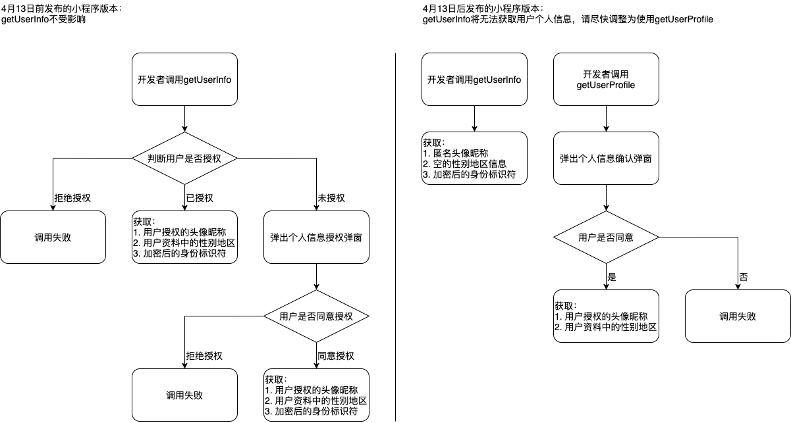

2021年2月23日起，若小程序已在微信开放平台进行绑定，则通过wx.login接口获取的登录凭证可直接换取unionID
2021年4月28日24时后发布的小程序新版本，无法通过wx.getUserInfo与 \<button open-type="getUserInfo"/\> 获取用户个人信息（头像、昵称、性别与地区），将直接获取匿名数据（包括userInfo与encryptedData中的用户个人信息），获取加密后的openID与unionID数据的能力不做调整。此前发布的小程序版本不受影响，但如果要进行版本更新则需要进行适配。
新增getUserProfile接口（基础库2.10.4版本开始支持），可获取用户头像、昵称、性别及地区信息，开发者每次通过该接口获取用户个人信息均需用户确认。具体接口文档：《getUserProfile接口文档》
由于getUserProfile接口从2.10.4版本基础库开始支持（覆盖微信7.0.9以上版本），考虑到开发者在低版本中有获取用户头像昵称的诉求，对于未支持getUserProfile的情况下，开发者可继续使用getUserInfo能力。开发者可参考getUserProfile接口文档中的示例代码进行适配。

微信小程序要停用 wx.getUserInfo 接口，改为用 wx.getUserProfile 接口替换。
<view class="container">
<view class="userinfo">
<block wx:if="{{!hasUserInfo}}">
<button wx:if="{{canIUseGetUserProfile}}" bindtap="getUserProfile"> 获取头像昵称 </button>
<button wx:else open-type="getUserInfo" bindgetuserinfo="getUserInfo"> 获取头像昵称 </button>
</block>
<block wx:else>
<image bindtap="bindViewTap" class="userinfo-avatar" src="{{userInfo.avatarUrl}}" mode="cover"></image>
<text class="userinfo-nickname">{{userInfo.nickName}}</text>
</block>
</view>
</view>Page({
data: {
userInfo: {},
hasUserInfo: false,
canIUseGetUserProfile: false,
},
onLoad() {
if (wx.getUserProfile) {
this.setData({
canIUseGetUserProfile: true
})
}
},
getUserProfile(e) {
// 推荐使用wx.getUserProfile获取用户信息，开发者每次通过该接口获取用户个人信息均需用户确认
// 开发者妥善保管用户快速填写的头像昵称，避免重复弹窗
wx.getUserProfile({
desc: '用于完善会员资料', // 声明获取用户个人信息后的用途，后续会展示在弹窗中，请谨慎填写
success: (res) => {
this.setData({
userInfo: res.userInfo,
hasUserInfo: true
})
}
})
},
getUserInfo(e) {
// 不推荐使用getUserInfo获取用户信息，预计自2021年4月13日起，getUserInfo将不再弹出弹窗，并直接返回匿名的用户个人信息
this.setData({
userInfo: e.detail.userInfo,
hasUserInfo: true
})
},
})getUserProfile 每次调用都会显示弹窗给用户授权，如果不需要每次都获取用户最新的信息的话，可以把信息保存起来。
用wx.login获取的code传给后台验证登录时，直接返回用户信息即可，在需要更新用户信息时可以在接口返回的用户信息中加一个标识让小程序端去请求 getUserProfile 更新用户信息（适用于每个多长时间让用户去更新下用户信息的场景）。
[1] 公告地址: https://developers.weixin.qq.com/community/develop/doc/000cacfa20ce88df04cb468bc52801?blockType=1[2] getUserProfile接口文档: https://developers.weixin.qq.com/miniprogram/dev/api/open-api/user-info/wx.getUserProfile.html[3] getUserProfile接口文档中的示例代码: https://developers.weixin.qq.com/miniprogram/dev/api/open-api/user-info/wx.getUserProfile.html#%E7%A4%BA%E4%BE%8B%E4%BB%A3%E7%A0%81